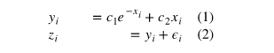

本文主要是对python数据分析领域的numpy、scipy、matplotlib、pandas基础的学习。
本文于2020-05-27日进行重新整理，将原文拆分成4部分
Numpy
matplotlib
pandas
scipy <<=
scipy
简介
插值:interp1d
使用
先通过已有的数据，设置一个interpld的函数，然后通过调用此函数就可以返回插值的结果
from scipy.interpolate import interp1d
ch4_cp = interp1d(data[‘TK’], data[‘Cp’])
ch4_cp(382.2)线性插值
我们可以通过 kind 参数来调节使用的插值方法，来得到不同的结果：
nearest 最近邻插值:
cp_ch4 = interp1d(data[‘TK’], data[‘Cp’], kind=”nearest”)
zero 0阶插值
cp_ch4 = interp1d(data[‘TK’], data[‘Cp’], kind=”zero”)
linear 线性插值
quadratic 二次插值
cp_ch4 = interp1d(data[‘TK’], data[‘Cp’], kind=”quadratic”)
cubic 三次插值
cp_ch4 = interp1d(data[‘TK’], data[‘Cp’], kind=”cubic”)
4,5,6,7 更高阶插值
cp_ch4 = interp1d(data[‘TK’], data[‘Cp’], kind=4)概率统计方法:stats
连续分布：
正态分布：norm
from scipy.stats import norm
norm.rvs 产生指定参数的随机变量:rvs=random variates
x_norm = norm.rvs(size=500)norm.pdf 返回对应的概率密度函数值
x1 = linspace(-2,2,108)
norm.pdf(x1)
norm.pdf(x1, loc=0, scale=1)norm.cdf 返回对应的累计分布函数值
norm.fit 返回给定数据下，各参数的最大似然估计（MLE）值
x_mean, x_std = norm.fit(x_norm)- 对数正态:lognorm
离散分布
二项分布：binom
num_trials = 60
x = arange(num_trials)
plot(x, binom(num_trials, 0.5).pmf(x), ‘o-‘, label=’p=0.5’)泊松分布：
x = arange(0,21)
Probability mass function:pmf，概率质量函数
plot(x, poisson(1).pmf(x), ‘o-‘, label=r’$\lambda$=1’)自定义离散分布rv_discrete
xk = [1, 2, 3, 4, 5, 6]
pk = [.3, .35, .25, .05, .025, .025]loaded = rv_discrete(values=(xk, pk))
loaded.rvs(size=2) #产生2个服从分布的随机变量曲线拟合：polyfit,poly1d
多项式拟合
1
2
3
4
5
6
7
8
9
10from numpy import polyfit, poly1d
x = np.linspace(-5, 5, 100)
y = 4 * x + 1.5
noise_y = y + np.random.randn(y.shape[-1]) * 2.5
# polyfit返回的是参数
coeff = polyfit(x, noise_y, 1) #一阶多项式拟合
# poly1d返回就是参数对应的函数,可以至今进行调用
y3 = poly1d(polyfit(x,y,3)) 3阶拟合
最小二乘拟合:lstsq
sciplinalg.lstsq
一般来书，当我们使用一个 N-1 阶的多项式拟合这 M 个点时，有这样的关系存在：
要得到 C ，可以使用 scipy.linalg.lstsq 求最小二乘解。
这里，我们使用 1 阶多项式即 N = 2，先将 x 扩展成 X：
1 | X = np.hstack((x[:,np.newaxis], np.ones((x.shape[-1],1)))) |
线性回归:linregress
from scipy.stats import linregress
slope, intercept, r_value, p_value, stderr = linregress(x, y)
p = plt.plot(x, slope * x + intercept, ‘k–’)
更高级拟合
from scipy.optimize import leastsq
最优（最值）minimize
from scipy.optimize import minimize
result = minimize(neg_dist, 40, args=(1,))
minimize 接受三个参数：第一个是要优化的函数，第二个是初始猜测值，第三个则是优化函数的附加参数，默认 minimize 将优化函数的第一个参数作为优化变量，所以第三个参数输入的附加参数从优化函数的第二个参数开始。
from scipy.optimize import rosen
rosen函数就是一个三维中有各种极值的函数
利用 callback 参数查看迭代的历史：
x0 = [-1.5, 4.5]
xi = [x0]
result = minimize(rosen, x0, callback=xi.append)
xi = np.asarray(xi)
print xi.shape
print result.x
优化：
Jacobian:类似于梯度递减
result = minimize(rosen, x0, jac=rosen_der, callback=xi.append)
result = minimize(rosen, x0, method=”nelder-mead”, callback = xi.append)
result = minimize(rosen, x0, method=”powell”, callback=xi.append)
积分:quad/simps/trapz
符号积分
from sympy import symbols, integrate
import sympy
from sympy import init_printing
init_printing()x,y = symbols(‘x y’)
z = sympy.sqrt(x2 + y2)
z.subs(x,3).subs(y,4)from sympy.abc import theta
y = sympy.sin(theta) ** 2
Y = integrate(y)
Y.subs(theta, np.pi) - Y.subs(theta, 0)
数值积分：quad 参数出函数及上下限
from scipy.integrate import quad
interval = [0., inf]def g(x):
return np.exp(-x * 1/2)
value, max_err = quad(g, interval)双重积分
采样点积分：trapz方法 与 simps方法，参数是y值与x值
from scipy.integrate import trapz, simpsx_s = np.linspace(0, np.pi, 5)
y_s = np.sin(x_s)
x = np.linspace(0, np.pi, 100)
y = np.sin(x)
result_s = trapz(y_s, x_s)
result_s_s = simps(y_s, x_s)
微分方程：odeint
from scipy.integrate import odeint
def dy_dt(y, t):
return np.sin(t)
t = np.linspace(0, 2*pi, 100)
result = odeint(dy_dt, 0, t)
线性代数：linalg
from scipy import linalg
求逆
A = np.array([[1,2],[3,4]])
print linalg.inv(A)求解线性方程组：solve
A = np.array([[1, 3, 5],[2, 5, 1], [2, 3, 8]])b = np.array([10, 8, 3])
x = linalg.solve(A, b)行列式
A = np.array([[1, 3, 5],[2, 5, 1], [2, 3, 8]])print linalg.det(A)
矩阵的范数:linalg.norm
A = np.array([[1, 2],[3, 4]])print linalg.norm(A)
print linalg.norm(A,1) #6 L1 norm 最大列和
print linalg.norm(A,-1) #4 L -1 norm 最小列和
print linalg.norm(A,np.inf) #7 L inf norm 最大行和最小二乘解和伪逆
1
2
3
4
5
6
7
8
9
10
11
12
13
14
15
16
17
18
19
20
21
22
23
24
25
26
27
28
29
30
31
32
33
34
35
36
37
38
39
40
41
42
43
44
45
46
47
48
49
50
51
52
53
54
55
56
57
58
59
60
61
62
63
64
65
66
67
68
69
70
71
72
73
74
75
76c1, c2 = 5.0, 2.0
i = np.r_[1:11]
xi = 0.1*i
yi = c1*np.exp(-xi) + c2*xi
zi = yi + 0.05 * np.max(yi) * np.random.randn(len(yi))
#A这一步
#这一步就是给e**-xi 多加了一列 xi ，就是给出yi = c1 e ** -x + c2*x
A = np.c_[np.exp(-xi)[:, np.newaxis], xi[:, np.newaxis]]
c, resid, rank, sigma = linalg.lstsq(A, zi)
print c
```s
其中 c 的形状与 zi 一致，为最小二乘解，resid 为 zi - A c 每一列差值的二范数，rank 为矩阵 A 的秩，sigma 为矩阵 A 的奇异值。
- 广义逆
linalg.pinv 或 linalg.pinv2 可以用来求广义逆，其区别在于前者使用求最小二乘解的算法，后者使用求奇异值的算法求解。
- 特征值与特征向量：linalg.eig(A)
linalg.eig(A) #返回矩阵的特征值与特征向量
linalg.eigvals(A) #返回矩阵的特征值
linalg.eig(A, B) #求解 $\mathbf{Av} = \lambda\mathbf{Bv}$ 的问题
- 奇异值分解：linalg.svd(A)


U,s,Vh = linalg.svd(A) #返回U 矩阵，奇异值s，$V^H$ 矩阵
Sig = linalg.diagsvd(s,M,N) #从奇异值恢复
- LU分解： linalg.lu(A)
A = np.array([[1,2,3],[4,5,6]])
P, L, U = linalg.lu(A)
- 矩阵函数
指数：linalg.expm3(A) /linalg.expm2
对数： inalg.logm(linalg.expm(A))
## 稀疏矩阵：scipy.sparse
### 简介
coo_matrix(arg1[, shape, dtype, copy]) A sparse matrix in COOrdinate format.
csc_matrix(arg1[, shape, dtype, copy]) Compressed Sparse Column matrix
csr_matrix(arg1[, shape, dtype, copy]) Compressed Sparse Row matrix
### 构建
from scipy.sparse import *
A = coo_matrix([[1,2,0],[0,0,3],[4,0,5]])
参数是一个array
不同格式的稀疏矩阵可以相互转化
B = A.tocsr() #转化为csr
C = A.todense() #转化为普通矩阵
还可以传入一个 (data, (row, col)) 的元组来构建稀疏矩阵：这种应该是以后的方法
I = np.array([0,3,1,0]) #行
J = np.array([0,3,1,2]) #列
V = np.array([4,5,7,9]) #数值
A = coo_matrix((V,(I,J)),shape=(4,4))
### 求解微分方程
```python
from scipy.sparse import lil_matrix
from scipy.sparse.linalg import spsolve
from numpy.linalg import solve, norm
from numpy.random import rand
A = lil_matrix((1000, 1000))
A[0, :100] = rand(100)
A[1, 100:200] = A[0, :100]
A.setdiag(rand(1000))
#转化为csr求解
A = A.tocsr()
b = rand(1000)
x = spsolve(A, b)
#正常数组求解
x_ = solve(A.toarray(), b)
sparse.find
返回一个三元组，表示稀疏矩阵中非零元素的 (row, col, value)
sparse.issparse
查看一个对象是否为稀疏矩阵：
稀疏矩阵的线性代数
矩阵操作
scipy.sparse.linalg.inv #稀疏矩阵求逆
scipy.sparse.linalg.expm #求稀疏矩阵的指数函数矩阵范数
scipy.sparse.linalg.norm #稀疏矩阵求范数